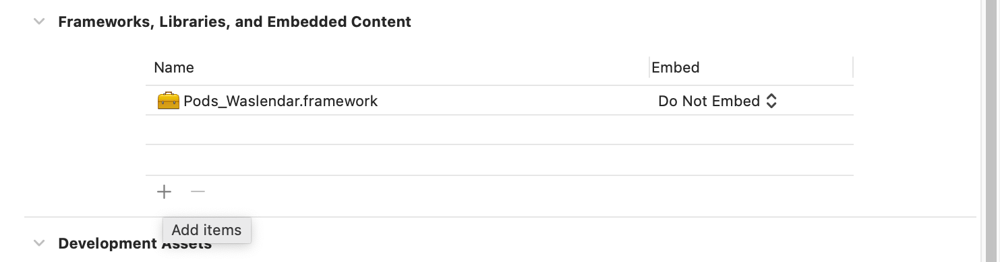
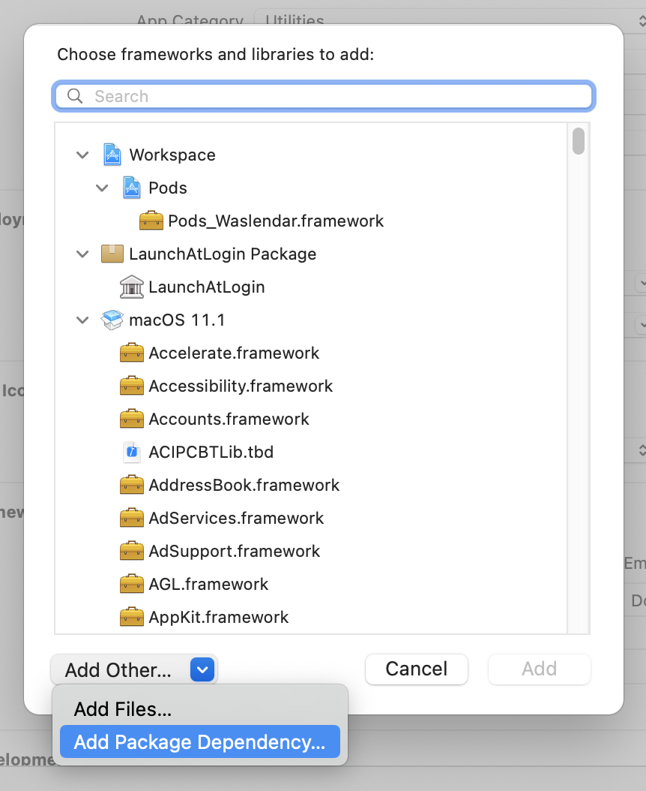
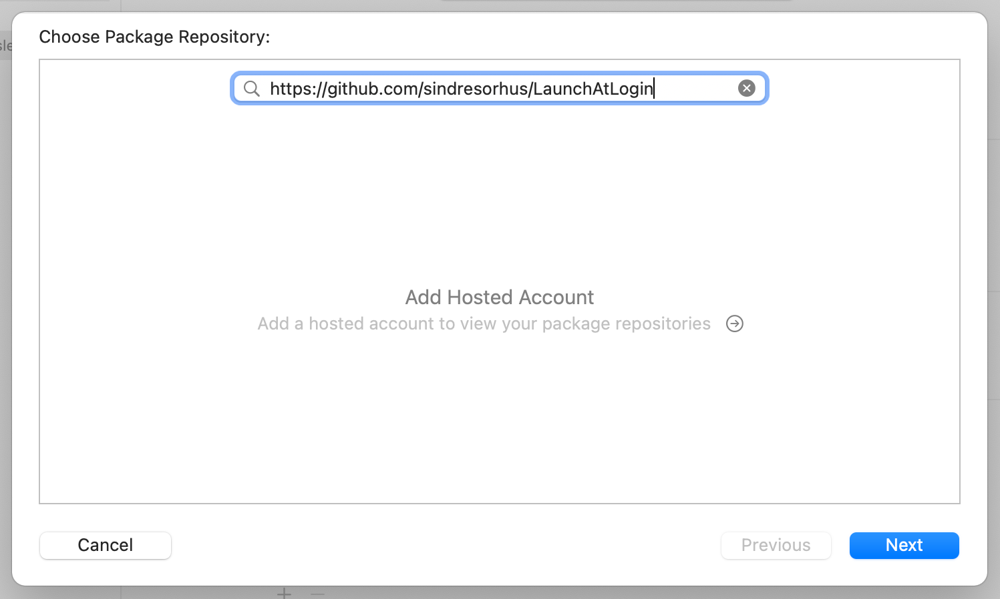
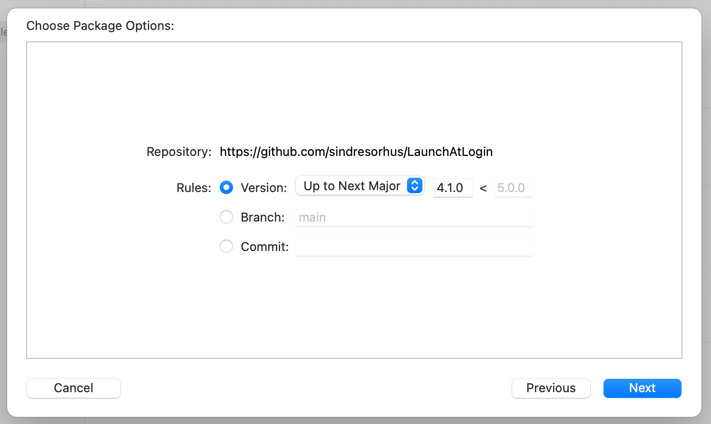
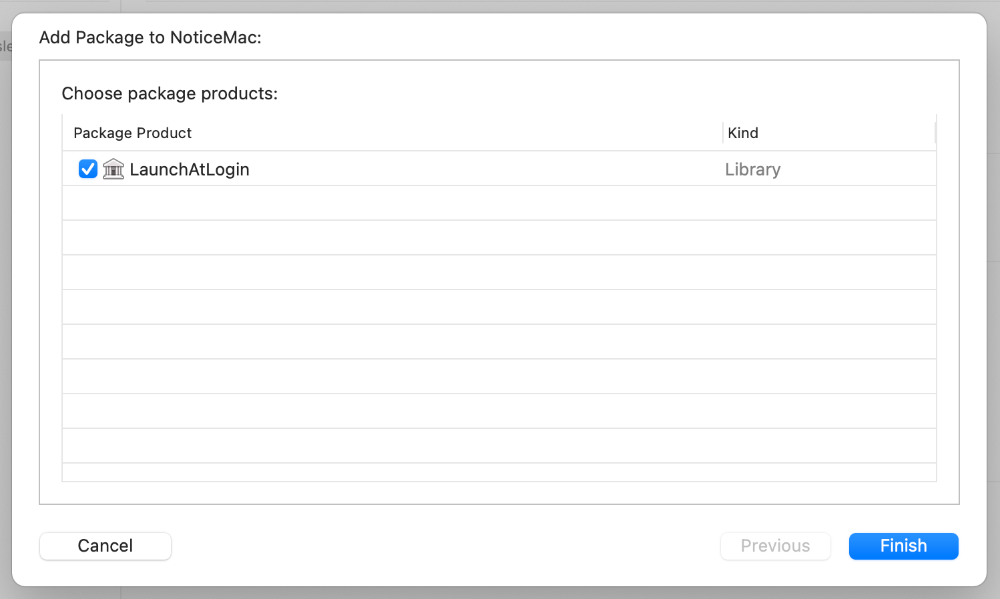
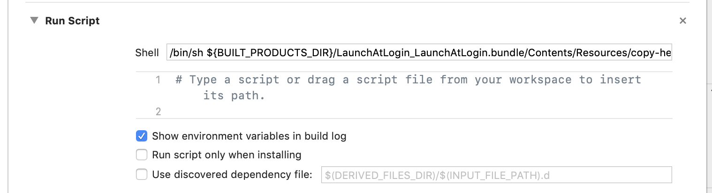

【macOS】"ログイン時に起動"を簡単に実装できる「LaunchAtLogin」
Contents
はじめに
常駐系のMacアプリ（LINE、Discordなど？）でよく見かける「ログイン時に起動」という設定がありますが、これを簡単に実装できる「LaunchAtLogin」というライブラリを紹介します。
LaunchAtLoginには、ログイン時に起動させるヘルパーとなるアプリが入っていて、そこからアプリ本体を起動させます。
これを自力で用意しようとすると割と大変なので、今回はありがたく利用させてもらいました。
インストール方法
このライブラリではCocoapodsが使えないので、Swift Package Managerを使う方法を載せておきます。
Carthageを使ってインストールすることもできます。

「TARGETS」の「General」タブにある「Frameworks, Libraries, and Embedded Content」という所の＋ボタンを押します。

出てきたポップアップ画面の左下「Add Other…」を押して、「Add Package Dependency…」を選択します。

上部のバーにhttps://github.com/sindresorhus/LaunchAtLoginと入力してNextを押します。

バージョンを聞かれるので、特に指定がなければNextで次に進みます。

最後にこのように「LaunchAtLogin」と出てくるので、Finishを押せばインストール完了です。

次に、「TARGETS」の「Build Phases」タブにある左上の＋ボタンを押して「New Run Script Phase」を選択し、「shell」のところに/bin/sh ${BUILT_PRODUCTS_DIR}/LaunchAtLogin_LaunchAtLogin.bundle/Contents/Resources/copy-helper-swiftpm.shをコピペします。
Carthageではコピーするパスが違うようなので注意してください。
使い方
インポート
import LaunchAtLogin
「ログイン時に起動」設定になっているか？（Bool）
LaunchAtLogin.isEnabled
ライブラリ側で保存されるので、この設定をUserDefaultsなどに保存しておく必要はありません。
LaunchAtLogin.isEnabled = true
このようにLaunchAtLogin.isEnabledを書き換えるだけで、LaunchAtLoginの設定を変更できます。
SwiftUIだと別の方法でUIに紐付ける（？）こともできるみたいです。
注意事項
実際に動くかどうか確かめる時は、PC内にそのアプリが一つしかない状態にしておく必要があります。
Finderで検索をかけて削除しておきましょう。
おわりに
その他のコード例や注意事項などは、ライブラリのGitHubページから確認できます。
1度目を通しておくことをオススメします。

Comments
Show Comments